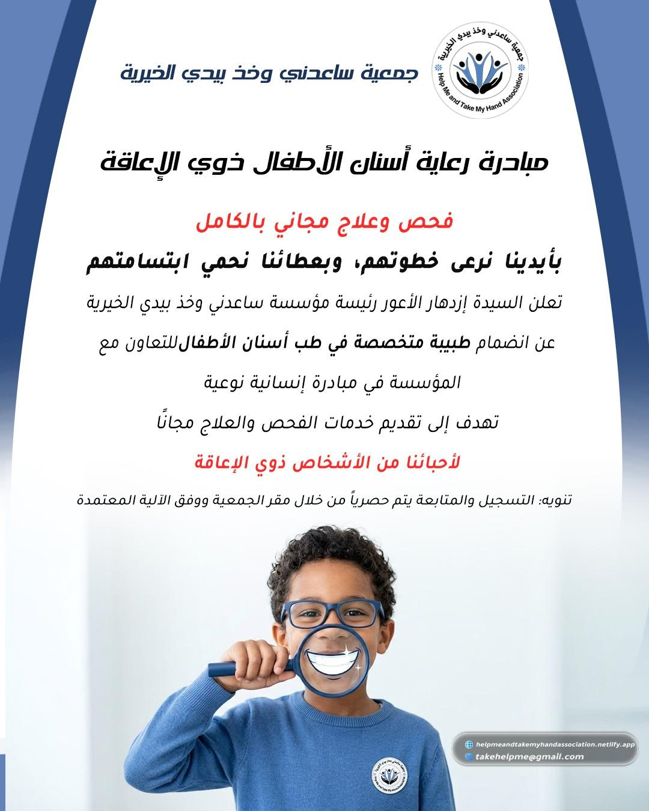

Free Dental Care for Children with Disabilitiesمبادرة رعاية أسنان الأطفال ذوي الإعاقة
تعلن السيدة إزدهار الأعور، رئيسة مؤسسة ساعدني وخذ بيدي الخيرية، عن انضمام طبيبة متخصصة في طب أسنان الأطفال للتعاون مع المؤسسة في مبادرة إنسانية تهدف إلى تقديم فحص وعلاج أسنان الأطفال ذوي الإعاقة مجانًا.
يتم التواصل والتسجيل حصريًا من خلال الجمعية، والمبادرة مخصصة للأطفال ذوي الإعاقة وفق الآلية المعتمدة لدى المؤسسة. نتقدم بخالص الشكر والتقدير للطبيبة الكريمة على عطائها الإنساني.
Association President Izdihar Al-A'war announced the participation of a pediatric dental specialist in a humanitarian initiative providing free examinations and dental treatment for children with disabilities.
Registration is handled exclusively through the association according to its approved process. We extend our sincere thanks to the participating doctor for her generous humanitarian service.